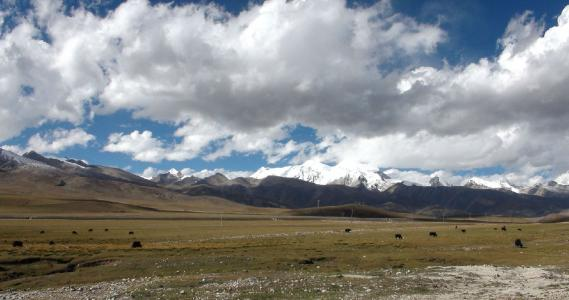
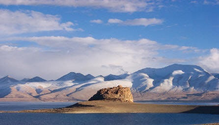

地理位置
羌塘高原位于青藏高原腹地，地层特点是古老基底出露少，地层年代北部老、南部新。主要为巨厚
的海相或海陆交替相的石灰岩与砂、页岩互层；其次则有以红色或灰色砂砾岩与泥岩为主的第三纪红层分布，第四纪的湖相沉积
、风成堆积及冰川、冰水与冰缘等沉积广为普遍。反映羌塘高原地质历史相对年轻，近代沉积环境较为干冷的特点。
形成历史
青藏高原有确切证据的地质历史可以追溯到距今4亿-5亿年前的奥陶纪，其后青藏地区各部分曾有过不同资料的地壳升降，或为海水淹没，
或为陆地。到2.8亿年前（地质年代的早二叠世），青藏高原是波涛汹涌的辽阔海洋。这片海域横贯欧亚大陆的南部地区，与北非、南欧、
西亚和东南亚的海域沟通，称为“特提斯海”、或“古地中海”，当时特提斯海地区的气候温暖，成为海洋动、植物发育繁盛的地域。其南北
两侧是已被分裂开的原始古陆（也称泛大陆），南边称冈瓦纳大陆，包括南美洲、非洲、澳大利亚、南极洲和南亚次大陆；北边的大陆称为
欧亚大陆，也称劳亚大陆，包括欧洲、亚洲和北美洲。
约在2.1亿年前，特提斯海北部再次进入构造活跃期，北羌塘地区、喀喇昆仑山、唐古拉山、横断山
脉脱离了海浸；到了距今8000万前，印度板块继续向北漂移，又一次引起了强烈的构造运动。冈底斯山、念青唐古拉山地区急剧上升，藏北地区和部分藏南地区也脱
离海洋成为陆地。整个地势宽展舒缓，河流纵横，湖泊密布，其间有广阔的平原，气候湿润，丛林茂盛。距今一万年前，
高原抬升速度更快，以平均每年7厘米速度上升，使之成为当今地球上的“世界屋脊”。青藏高原是世界上最年轻的一个高原，2.4亿年前，印度板块开始向北向亚洲板
块挤压，由此引起昆仑山脉和可可西里地区的隆起。青藏高原的形成并不是一次
就完成的，其上升速度曾几度达到停止，但有时也非常迅速。一万年前其上升速度曾达到每年7厘米。今天的青藏高原中部以风化为主，而边缘仍在不断上升。
地貌特征

它位于青藏高原腹地，南起冈底斯山——念青唐古拉山，北至喀喇昆仑山——可可西里山；东自内外流水系的分水岭，西以公珠错——革吉——多玛一线与
阿里西部山地为界。羌塘高原整个地势西北高，东南低，主要由低山缓丘与湖盆宽谷组成的地形，起伏和缓，平均海拔4800米，相对高差一般200～
500米，为青藏高原内海拔最高、高原形态最典型地域。因气候干燥，除高原四周大山脉发育较大规模冰川外，高原内少数海拔6000米以上高峰（如阿
木岗、木嘎岗日等）仅有小规模大陆性冰川。但寒冻风化与冻融活动等形成的冰缘地貌普遍，冻土面积亦广，为北半球中低纬度地带多年冻土最为发育地
区。在巴毛穷宗以北至昆仑山南麓残留有许多新生代火山活动遗迹，如火山锥、桌状山及熔岩台地等。此外，在南部石灰岩地区则有过去间冰期温暖气候
的产物──溶洞、天生桥、石芽与孤峰等喀斯特地貌。
羌塘高原的湖泊除少数为风沙沉积物堵塞或冰川作用形成外，多属构造湖。其发育与分布均与断陷构造有关。如黑阿公路以南地区，海拔4500米左右，
为羌塘高原地势最低洼的地带，大湖密集，即与冈底斯山脉北麓东西向的断陷带有关。
羌塘高原最大的景观特色是湖泊众多，湖泊面积达2.14万平方公里，约占中国湖泊总面积的1/4。